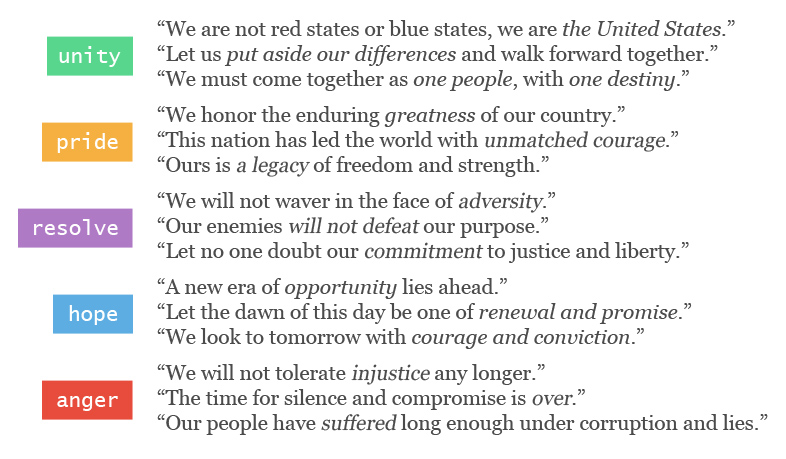
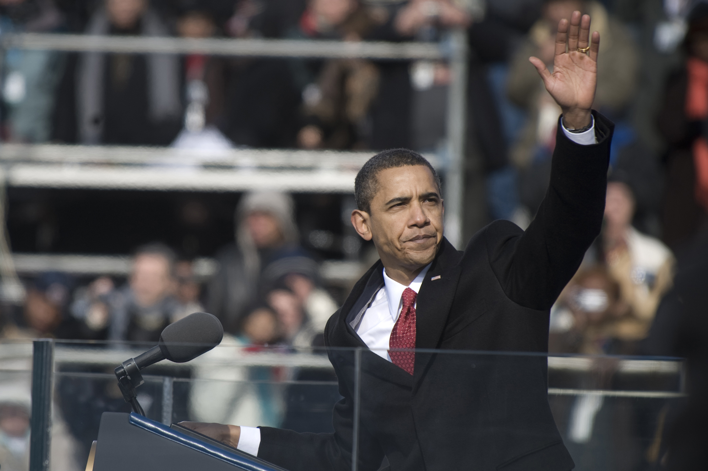
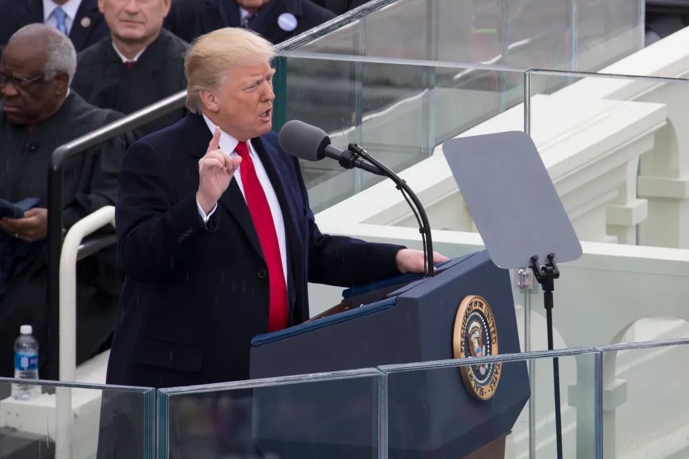

The Emotional Compass
Every inaugural speech weaves through a spectrum of emotions, from fierce resolve to soaring hope. It reflects the vision each inaugurated president offers of what America should become over the next four years.
What We Did
In this project, we collected all 63 inaugural speeches, both Inaugural Addresses and Addresses Upon Assuming the Office of President,
spanning from George Washington in 1789 to Donald Trump's second term in 2025.
The texts were sourced from The American Presidency Project
maintained by the University of California, Santa Barbara. We translate these speeches to retrieve their emotional aspects by using machine learning models.
Of course, no machine learning model is as advanced as human brains.
So think of this project as a vibe check: it's not gonna produce a perfectly accurate result, but it's a fun, experimental way to see history through an algorithmic lens.
Our Model
To capture the emotional tone of each speech, we used the all-mpnet-base-v2 sentence embedding model to represent each sentence semantically.
We sliced every speech into individual sentences, then used the model to map them against our five emotional anchors:
pride, unity, hope,
resolve, and anger.
If none of these five emotions fit, we categorize the sentences as Neutral.
Anchoring Emotions
To detect the emotion, we measures the similarities of the sentences into anchors.
Some of the anchors are as follows:

If none of the anchors matches closely to the sentence, we assumed it as Neutral.
Case #1: Barack Obama's First-Term Inauguration Speech
Let's start with a modern classic as an example. Barack Obama took the oath of office as the first African American president during a moment of immense peril— the worst financial crisis since the Great Depression and two ongoing wars. Over a million people gathered on a freezing National Mall, not just to celebrate history, but to find reassurance.
While often remembered for hope, our model shows that the dominant emotion here is actually resolve. This makes perfect sense given the context: the economy was freefalling. Obama didn't just offer optimism; he demanded grit. Frequent use of words like "work", "risk", "endure", and "remake" drives the score up, reflecting a nation that needed to "pick itself up" rather than just dream.
Case #2: Donald Trump's First-Term Inauguration Speech
Now, let's look at a sharp pivot. Donald Trump entered office on a wave of populist discontent, promising to dismantle the status quo. The setting was starkly different from his predecessors—less a celebration of continuity, and more a declaration of disruption. His speech, famously short and punchy, painted a dark picture of "American Carnage" that only he could fix.
The model picks up a distinct shift here. While the media focused on the dark imagery, the algorithmic dominance is pride. This tracks perfectly with the "America First" doctrine. The speech wasn't about complex policy nuance; it was a blunt instrument of nationalism. The high pride score comes from the repetitive assertion of American ownership like "our country" or "our nation".
The Big Picture
Now, let's widen the lens. Here is the emotional footprint of every inaugural speech of every U.S. President since George Washington. Keep scrolling down as we dissect the top 3 speeches with the highest score of each mood.
The Architects of Hope
The peak of hope often coincides with moments of technological transition or a desperate need for social healing. Bill Clinton (1997) famously campaigned on a 'Bridge to the 21st Century', using his second inaugural to paint a glowing picture of the looming digital age. Interestingly, Richard Nixon (1969) ranks high despite the turmoil of Vietnam; his speech was a deliberate attempt to 'lower our voices' and offer the hope of peace to a fractured generation. Lyndon B. Johnson (1965) used his address to introduce the 'Great Society', framing the elimination of poverty not just as a policy goal, but as a moral hope for a more just America.
The Voices of Anger
In our model, anger often reflects existential friction and political defiance. Abraham Lincoln's (1861) first inaugural carries the weight of a nation splitting in two; while he sought peace, his stern refusal to allow the Union to be dissolved creates a high-tension anger profile. John Tyler (1841) and William Henry Harrison (1841) represent a different kind of friction—the bitter partisanship of the Whig vs. Democrat era. Harrison's record-length speech was an aggressive 8,000-word defense of Whig principles, while Tyler's address (delivered after Harrison's sudden death) was a defensive, sharp response to a Congress that didn't yet trust his 'accidental' presidency.
The Sentiment of Pride
The pride score captures moments of intense national identity and the 'exceptionalism' of the American project. John Adams (1797), as only the second president, spent much of his speech validating the success of the new Constitution— a moment of immense revolutionary pride. John Quincy Adams (1825) echoed this, celebrating the 'Era of Good Feelings' where the U.S. began to feel like a global power. Franklin D. Roosevelt's third inaugural (1941) sits at a unique crossroads; as Europe fell to fascism, his speech was a proud, defiant celebration of democracy's resilience, framing America as the last, greatest hope for freedom.
The Weight of Resolve
When the nation faces an external threat, the rhetoric shifts to resolve. John F. Kennedy (1961) is the gold standard for this mood; his 'bear any burden' speech was a cold-war manifesto of sheer determination. Andrew Jackson (1829), the 'Old Hickory' general, brought that same soldierly resolve to his first inaugural, signaling a blunt, unyielding shift toward populist rule. Finally, Franklin D. Roosevelt's short 1945 address, delivered from a porch during the height of World War II, was stripped of all fluff—it was a somber, iron-willed commitment to see the war through to the end.
The Unifiers
Unity is rarely organic; it is usually a rhetorical strategy used to bridge deep divides. Abraham Lincoln's (1865) second inaugural is arguably the greatest unity speech in history, urging 'malice toward none' as the Civil War ended. Rutherford B. Hayes (1877) holds a high score because he had to—his election was so contested it nearly sparked a second civil war; his speech was a desperate plea for national reconciliation. Even the combative Andrew Jackson (1833) spiked in unity during his second term as he fought the Nullification Crisis, using his rhetoric to hold the states together against the threat of secession.
The Briefest Neutrality
George Washington's second inaugural address (1793) remains the shortest in history—just 135 words. It is strictly procedural, reflecting a neutral tone unlike any modern speech.
The Mosaic of Democracy
Looking at the full grid, one thing is clear: there is no single "presidential sound". The mood of the Oval Office is as varied as the men who have occupied it. But this diversity raises new questions: is there a "red" tone and a "blue" tone? And how have these emotions shifted as we moved from the age of quill pens to the age of the internet? Let's break the data down by party and then by time.
Two Worlds, One Podium
To understand the partisan divide, we filtered our dataset to start from 1853 (Franklin Pierce). Why here? This era marks the dawn of the modern two-party system. With the Whig party collapsing and the Republican party emerging just a year later (1854), this is the starting line for the Democrat vs. Republican dynamic that defines American politics today. Anything before this mixes Federalists and Democratic-Republicans, which don't fit the modern "red vs. blue" mold.
The Primary Colors
If we compare the highest moods for each party, we saw that Democrats are the party of resolve emphasized in 29.3% of their rhetoric. This means that most Democratic presidents' speeches contain a nuance of resolve, with words that emphasized working towards solutions and grit to achieve something. Meanwhile, Republican presidents delivered speeches that are mostly dominated by pride, as we see here that pride tops their list at 28.0%. Their speeches mostly revolved around how the American people should be proud of their country or how the United States stands as the greatest country in the world.
The Trade-Off
Now if we compare each of the 5 moods between these two parties, we found that Democrats are higher at resolve (+4.1%) and hope (+3.2%). Meanwhile, Republicans gain higher score at anger (+3.0%) and unity (+2.1%). Republicans are also slightly higher than Democrats at pride by a small margin (+0.6%).
Now let's see how inaugural speeches moods evolve over time, as we tried to analyze how their change might be affected by the social and political contexts at that time. This is the mood timeline of all U.S. presidents' inaugural speeches. Keep scrolling up or down. Hover your mouse over the chart to see more details.
The River of History
Scroll down to move forward in time...
The Algorithm as a Mirror
We began this project with a simple question: can a machine understand the soul of a nation?
By feeding 63 inaugural addresses into a sentence-embedding model, we tried to quantify the unquantifiable:
pride, unity, hope,
resolve, and anger.
It turns out the data reveals a clear trajectory. The early presidency was a place of stoic duty,
dominated by neutral procedural language and high-minded unity.
As the nation matured and fractured, the emotional vocabulary expanded.
We saw pride swell during the era of expansion,
resolve harden during the Cold War, and hope becomes a professional political tool in the modern media age.
The presidency has evolved from a role of administration to one of emotional leadership.
Our analysis also exposed a fascinating divergence in the modern two-party system.
Democrats have historically leaned into the language of resolve and hope,
framing politics as a struggle for a better tomorrow.
Republicans, conversely, have anchored their rhetoric in anger and unity
(and, slightly, pride), framing politics as a defense of shared American values and identity.
However, we must view these results with a healthy dose of skepticism.
Our model is a bag-of-sentences: it understands semantic closeness, but it misses the human spark.
It struggles with sarcasm, often misreads rhetorical questions, and cannot feel the tremble in a voice or the roar of a crowd.
When Lincoln spoke of "malice toward none", the model sees unity.
It doesn't see the thousands of dead soldiers that gave those words their weight.
Yet, even with these flaws, the "vibe check" holds value.
It acts as a mirror, reflecting macro-trends that are too slow to see with the naked eye.
It shows us that the anger we feel in politics today is not new,
but a recurrence of the populist frustration seen in the 1890s.
It reminds us that unity is often highest not when we are at peace, but when we are most broken.
Ultimately, this project suggests that while the words change, the emotional blueprint of democracy remains cyclical.
We are a nation forever oscillating between the resolve to endure and the hope to rebuild.
References
Model: all-mpnet-base-v2 (Hugging Face) for sentence embeddings.
Classification: Cosine similarity against 5 emotional anchor clusters.
Data Source: The American Presidency Project (UC Santa Barbara).
Images:
Lyndon B. Johnson's 2nd ianuguration photo (main image) was from Wikipedia,
Barack Obama's 1st inauguration photo was from Wikipedia,
Donald J. Trump's 1st inauguration photo was from Wikipedia,
The White House photo was from Stockvault
AI Use:
Gemini 3.0 Pro was used for the following purposes: code-debugging, idea brainstorming, historical research, and narrative refining.
{kind=link}
{kind=link}
.jpg){kind=link}